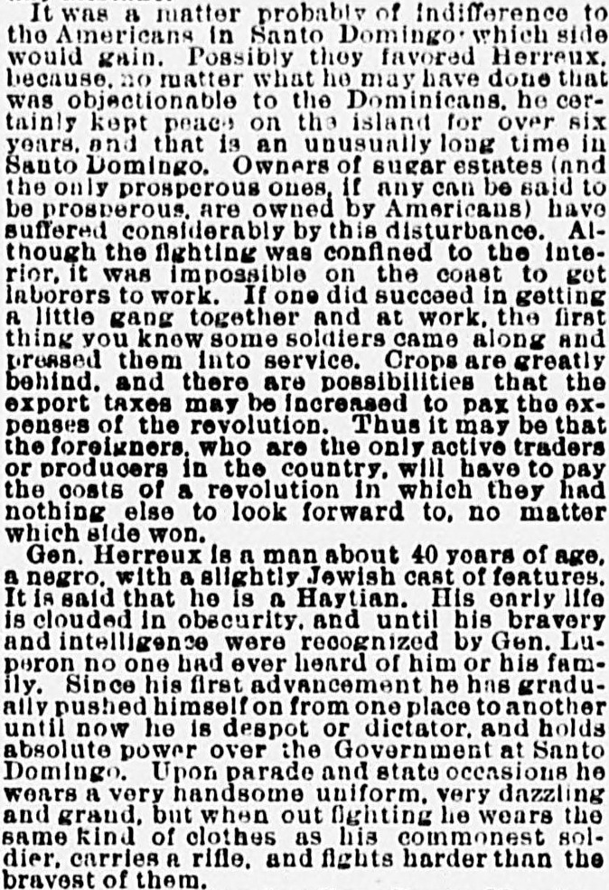
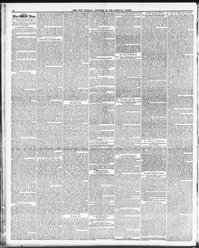

Laborers to work If one did succeed in getting ft littleObreros para trabajar Si uno lograba obtener un poco
The Sun. New York [N.Y.], October 24, 1886. Page 8. Published by Benj. H. Day. A daily newspaper, 1833–1916.The Sun. New York [N.Y.], 24 de octubre de 1886. Página 8. Publicado por Benj. H. Day. Periódico diario, 1833–1916. View the originalVer el original


See the full pageVer la página completaAccording to the newspaper report, ongoing revolution and military conscription of laborers in the Dominican Republic have left crops greatly behind, raising the possibility that export taxes will be increased to cover the costs. General Herroux, described as a 40-year-old of obscured early life and reported Haitian origin who rose through the ranks under General Luperon, now holds absolute power as a despot or dictator over the Government at Santo Domingo. Additionally, General Benito Moncion, the former Governor of the province of Monte Cristi and backer of the revolution's leader General Jussimire de Moya, formerly ruled his province more independently than any European king.Según la correspondencia periodística, la guerra civil y el reclutamiento forzoso de jornaleros en la República Dominicana ocasionaron un marcado atraso en las labores agrícolas, presagiándose un incremento en los tributos de exportación para costear las operaciones militares. El general Heureaux, descrito como un individuo de unos 40 años, de orígenes oscuros y supuesta ascendencia haitiana que ascendió en la milicia a la sombra del general Luperón, ejerce un poder absoluto y despótico sobre el Gobierno de Santo Domingo. De igual modo, el general Benito Monción, exgobernador de Montecristi y sostén del caudillo insurrecto general Casimiro de Moya, mandaba antaño en su provincia con mayor soberanía que monarca europeo alguno.
FULL TEXT:TEXTO COMPLETO:
It was a matter probably of indifference to the Americans in Santo Domingo which side would gain. Possibly they favored Herreux, because, no matter what he may have done that was objectionable to the Dominicans, he certainly kept peace on the island for over six years, and that is an unusually long time in Santo Domingo. Owners of sugar estates (and the only prosperous ones, if any can be said to be prosperous, are owned by Americans) have suffered considerably by this disturbance. Although the fighting was confined to the interior, it was impossible on the coast to get laborers to work. If one did succeed in getting a little gang together and at work, the first thing you know some soldiers came along and pressed them into service. Crops are greatly behind, and there are possibilities that the export taxes may be increased to pay the expenses of the revolution. Thus it may be that the foreigners, who are the only active traders or producers in the country, will have to pay the costs of a revolution in which they had nothing else to look forward to, no matter which side won.Era un asunto probablemente de indiferencia para los estadounidenses en Santo Domingo qué lado ganaría. Posiblemente favorecían a Herreux, porque, no importa lo que haya hecho que fuera objetable para los dominicanos, ciertamente mantuvo la paz en la isla por más de seis años, y eso es un tiempo inusualmente largo en Santo Domingo. Los propietarios de ingenios azucareros (y los únicos prósperos, si alguno puede decirse próspero, son propiedad de estadounidenses) han sufrido considerablemente por esta perturbación. Aunque la lucha estaba confinada al interior, era imposible en la costa conseguir trabajadores para trabajar. Si uno lograba reunir una pequeña cuadrilla y ponerla a trabajar, lo primero que se sabe es que venían algunos soldados y los presionaban al servicio. Las cosechas están muy atrasadas, y hay posibilidades de que los impuestos de exportación sean aumentados para pagar los gastos de la revolución. Así puede ser que los extranjeros, que son los únicos comerciantes o productores activos en el país, tendrán que pagar los costos de una revolución en la que no tenían nada más que esperar, no importara qué lado ganara.
Gen. Herreux is a man about 40 years of age, a negro, with a slightly Jewish cast of features. It is said that he is a Haytian. His early life is clouded in obscurity, and until his bravery and intelligence were recognized by Gen. Luperon no one had ever heard of him or his family. Since his first advancement he has gradually pushed himself on from one place to another until now he is despot or dictator, and holds absolute power over the Government at Santo Domingo. Upon parade and state occasions he wears a very handsome uniform, very dazzling and grand, but when out fighting he wears the same kind of clothes as his commonest soldier, carries a rifle, and fights harder than the bravest of them.El general Herreux es un hombre de unos 40 años de edad, un negro, con un ligero aire judío en los rasgos. Se dice que es haitiano. Su vida temprana está nublada en la oscuridad, y hasta que su valentía e inteligencia fueron reconocidas por el general Luperon nadie había oído hablar de él ni de su familia. Desde su primer ascenso se ha empujado gradualmente de un lugar a otro hasta que ahora es déspota o dictador, y tiene poder absoluto sobre el Gobierno en Santo Domingo. En desfiles y ocasiones de estado usa un uniforme muy hermoso, muy deslumbrante y grandioso, pero cuando está en campaña usa la misma clase de ropa que su soldado más común, carga un rifle, y lucha más duro que el más valiente de ellos.
This collection gathers the coverage of the Dominican Republic in the American press, in the order it was published.Esta colección reúne la cobertura de la República Dominicana en la prensa estadounidense, en el orden en que se publicaron.